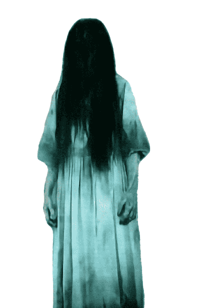

<div
  [ngStyle]="showDots ? { filter: 'invert(100%)' } : {}"
  style="
  margin: 0;
  padding: 0;
  background-image: url('{{ wallpaper }}');
  background-size: cover;
  background-position: center;
  background-attachment: fixed;
  height: 100vh;
"
>

<div *ngIf="ghostStatus" style="position: absolute;bottom: 0%; left: 50%;">
    <!-- Display an image if ghostStatus is true -->
    
    <!-- Audio player element with controls, autoplay, and a fallback message -->
  </div>
</div>

<audio style="display: none" #audioPlayer controls autoplay>
  <source src="../../../assets/audio/i-see-you-ghost.mp3" type="audio/mpeg" />
  Your browser does not support the audio element.
</audio>
